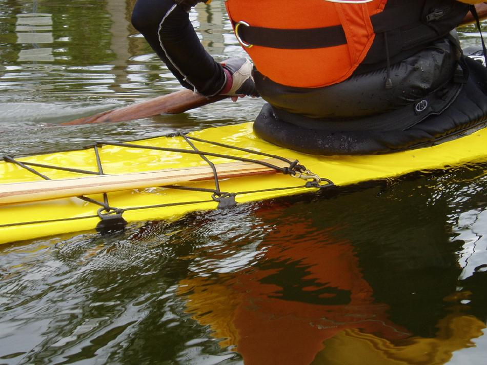

| Frame Modification ( Aft Deck Height) | Menu Previous Page Next Page |
|
 When Immersion Becomes Submersion - If the deck at the rear coaming area is riding too low in the water ( gunwale level or deck awash), it is because of too much weight on board vs the designed displacement of the kayak. This occurs in the flat aft deck rolling kayaks such as the Sea Ranger, and Sea Rider when paddler weight exceeds 220 lbs or so. In the Sea Rover, this same condition occurs when paddler weight exceeds 180lbs. This situation is localized to the 1.5ft ( 46cm) area between cross section 5 ( rear of coaming )and cross section 6 as they represent the low point on these very low freeboard designs ( 6 in./ 15cm). On these folding kayaks, the aft deck zipper and the rear of the coaming can potentially leak water that is pooling in this area. One remedy is to build the boat with higher and/or wider gunwales ( greater freeboard), and the second, and much easier modification is to raise the deck at this low point an inch or two by adding a taller cross section 5. This solution will not effect the kayaks performance, as could be the case with taller and wider gunwales. A front deck zipper is recommended when rolling these very shallow and flat aft deck kayaks. |
|